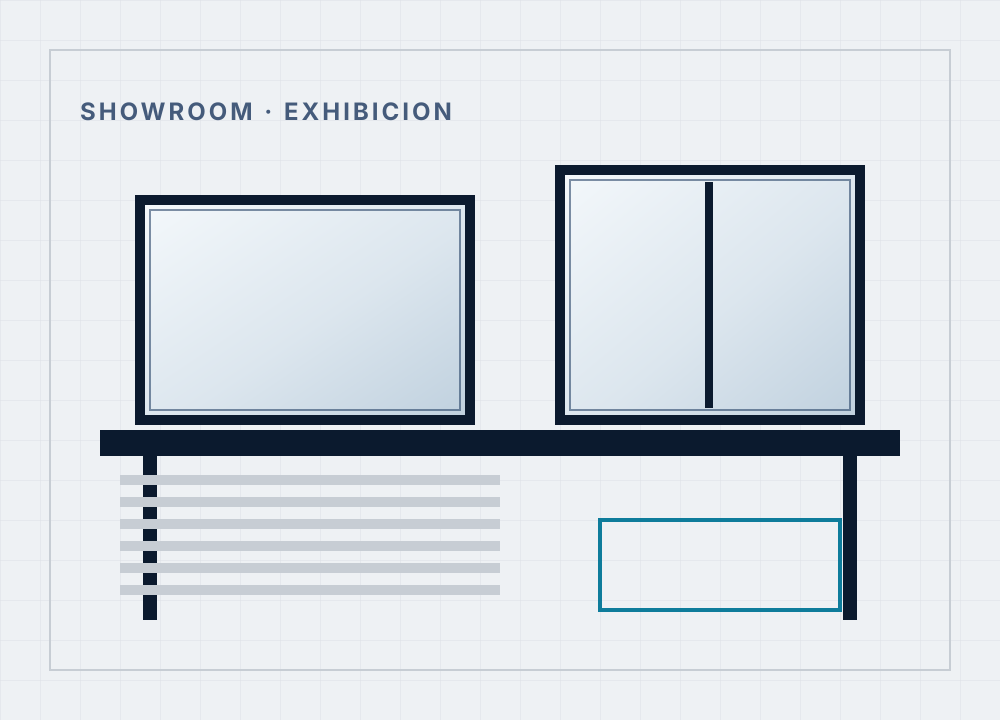

Asesorar antes de vender
Preguntamos para qué ambiente es y cómo se usa. A veces la respuesta es una línea más barata que la que venías a comprar, y está bien que así sea.
Quiénes somos
San José Aberturas nació hace más de treinta años como un comercio familiar en la Ciudad de Buenos Aires. Desde el primer día trabajamos con la misma idea: puertas y ventanas de buena calidad y, sobre todo, tiempo para explicarle bien a cada cliente qué le conviene.
Con los años nos volvimos distribuidores de las principales fábricas de aluminio, madera, chapa y PVC del país. Eso nos permite ofrecer varias líneas y comparar opciones reales en lugar de empujarte siempre el mismo producto.
No fabricamos ni instalamos: nuestro trabajo es que elijas bien y que el pedido llegue en tiempo y forma. Cuando la marca ofrece su propio servicio de medición y colocación, te lo gestionamos y te lo cotizamos nosotros.

Cómo trabajamos
Preguntamos para qué ambiente es y cómo se usa. A veces la respuesta es una línea más barata que la que venías a comprar, y está bien que así sea.
Trabajamos solo con fábricas reconocidas, que cumplen los plazos y que se hacen cargo si algo viene mal de origen.
No medimos ni colocamos. Si la marca ofrece ese servicio te lo gestionamos y te lo cotizamos, y si no, te recomendamos instaladores de confianza. Sin vueltas.